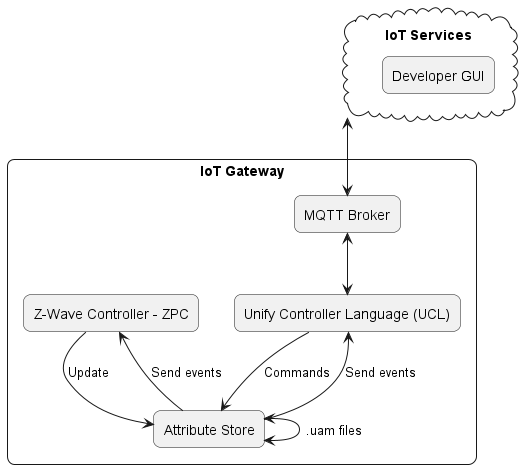
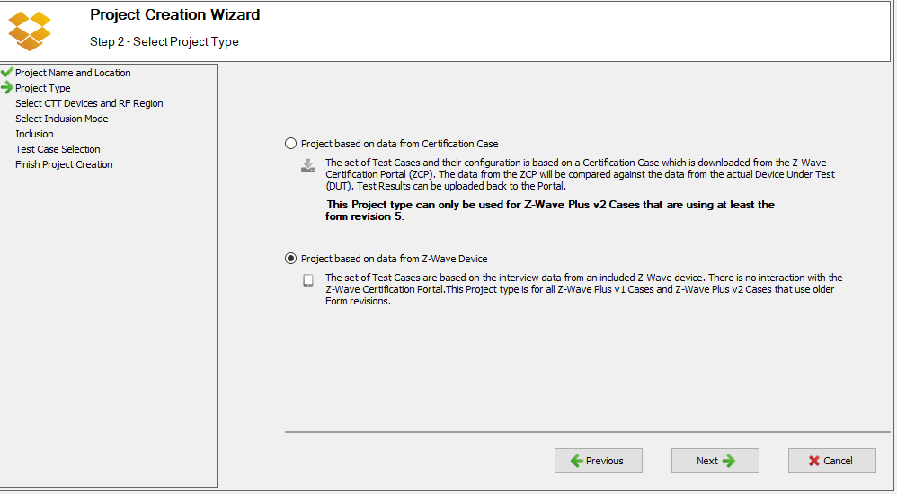
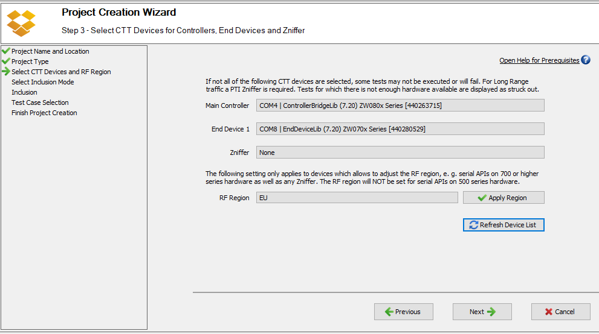
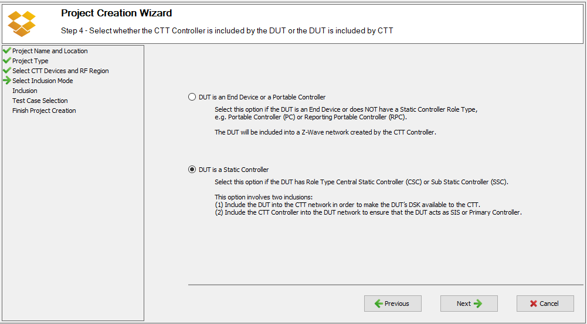
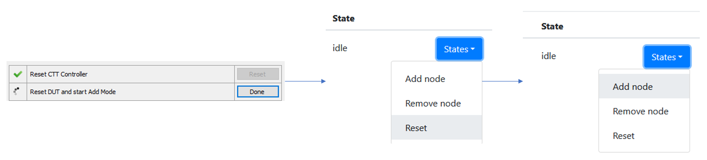
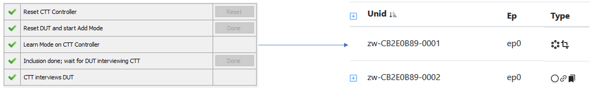
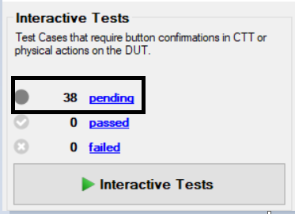

Guideline for implementing Command Classes
This guide is meant to guide you to implement a new Z-Wave command class in Unify. We’ll go trough step by step following a real example : implementing the Sound Switch command class.
The following schema shows you a top level view of all the components we are using :

The Z-Wave controller handles the Z-Wave commands and update the attribute store if needed.
The UCL updates the Attribute Store though commands.
The Attribute Store send events to :
The attributes monitored by the Z-Wave controller
The attributes monitored by the UCL that triggers MQTT Broker messages.
The .uam files allow to automatically update UCL attributes when Z-Wave attributes changes and vice versa.
NOTE : If you want the simplest example of a command class implementation you can look at the Binary Switch command class.
Defining the Z-Wave Command Class attribute state data model
The first step is to define the data model of the Z-Wave Command Class attributes state. A good starting point is the Z-Wave command class specification (also available in the Z-Wave PC Controller tool). You can look at different commands (get/set/report) and see which attributes are worth saving.
A good approach is to also make sure that you can self-certify your command class with the Compliance Test Tool (CTT) proposed by the Z-Wave alliance. You can find out more about that in the Z-Wave Compliance Test Tool (CTT) section. We recommend to validate your implementation against the CTT tool.

Most of the commands should be already defined in ZW_classcmd.h. Not that this file might not contains all the definitions you need, but you can look in the GSDK folder that contains the same file but more up to date. Simply copy the attributes and commands you need in the local ZW_classcmd.h.
NOTE : Don’t replace the new file by the old one as you might have some incompatibilities with the current command classes.
Based on the commands we need the following attributes :
| Attribute | Description | Associated command |
|---|---|---|
| Tone number | Supported tone number count | Tones Number |
| Configured volume | Current default volume on the device | Configuration |
| Configured tone | Current default tone on the device | Configuration |
| Tone Identifier | One for each tone number reported | Tone Info |
| Tone info name | Tone Description (under each Tone Identifier) | Tone Info |
| Tone info duration | Tone Duration (under each Tone Identifier) | Tone Info |
| Play | The tone ID that the device plays. 0 to stop, 255 to play the default tone (Configuration command) and 1-254 to play a specific tone | Play |
With those attributes we cover all the commands needs. The following schema illustrates the attributes we use in our Sound Switch command class implementation :

Each attribute in our Attribute Store triggers Z-Wave commands.
We use a TONE_INFO_IDENTIFIER as a parent of TONE_INFO_DURATION and TONE_INFO_NAME because they are directly related. The Z-Wave specification tells us to send a Tone Info Get for each reported Tones Number. This way we can create as many TONE_INFO_IDENTIFIER node as needed.
The TONE_INFO_IDENTIFIER triggers a Tone Info command while CONFIGURED_DEFAULT_TONE_IDENTIFIER triggers a Configuration command.
In the attribute store attributes has two states : defined and reported.
If the reported value is missing, the controller sends a GET command to gather the reported value.
If the defined value is set, the controller sends a SET command to set the desired value.
This mapping is explained in Get/Set command section
Create the data model in the Attribute Store
After defining the data model, the next step is to define the type of each node in the attribute store.
In applications\zpc\components\zpc_attribute_store\include\command_class_types create an header that defines the types used in command class implementation. The naming convention is zwave_command_class_{COMMAND_CLASS_NAME}.h
///> Tone identifier. uint8_t
typedef uint8_t sound_switch_tone_id_t;
///> Tone duration. uint16_t
typedef uint16_t sound_switch_tone_duration_t;
///> Volume representation. uint8_t
typedef uint8_t sound_switch_volume_t;
You might want to update this file as you are writing the logic. Here we defined 3 attributes we use often in the Sound Switch class : the tone identifier, the tone duration and the volume.
Attribute definition
Then we need to create the attributes of command class to register them later in the attribute store. This is done in the
attribute_store_defined_attribute_types.h header.
To add an attribute you can use the DEFINE_ATTRIBUTE macro. Each attribute should have an unique ID on 16 bits :
[COMMAND_CLASS_ID][UNIQUE_ATTRIBUTE_ID]
[0x79][0x01]
Where COMMAND_CLASS_ID is the command class ID (found in ZW_classcmd.h) and
UNIQUE_ATTRIBUTE_ID is an arbitrary and unique ID to the command class.
The first attribute you have to declare is the supported version :
/// zwave_cc_version_t
DEFINE_ATTRIBUTE(ATTRIBUTE_COMMAND_CLASS_SOUND_SWITCH_VERSION,
ZWAVE_CC_VERSION_ATTRIBUTE(COMMAND_CLASS_SOUND_SWITCH))
The ZWAVE_CC_VERSION_ATTRIBUTE macro set the unique attribute ID to 0x01. So you have to start your custom attribute listing to 0x02. We can define CONFIGURED_DEFAULT_VOLUME like :
// Configured volume for the Sound Switch
DEFINE_ATTRIBUTE(ATTRIBUTE_COMMAND_CLASS_SOUND_SWITCH_CONFIGURED_DEFAULT_VOLUME,
((COMMAND_CLASS_SOUND_SWITCH << 8) | 0x02))
ATTRIBUTE_COMMAND_CLASS_SOUND_SWITCH_CONFIGURED_DEFAULT_VOLUME has an ID of 0x7902. This is used latter for mapping the attribute store Z-Wave attributes to the Dot Dot model.
A complete definition of our classes attribute can be found bellow :
/////////////////////////////////////////////////
// Sound Switch Command Class
///< This represents the version of the Sound Switch Command class.
/// zwave_cc_version_t
DEFINE_ATTRIBUTE(ATTRIBUTE_COMMAND_CLASS_SOUND_SWITCH_VERSION,
ZWAVE_CC_VERSION_ATTRIBUTE(COMMAND_CLASS_SOUND_SWITCH))
// Configured volume for the Sound Switch
DEFINE_ATTRIBUTE(ATTRIBUTE_COMMAND_CLASS_SOUND_SWITCH_CONFIGURED_DEFAULT_VOLUME,
((COMMAND_CLASS_SOUND_SWITCH << 8) | 0x02))
// Configured tone for the Sound Switch
DEFINE_ATTRIBUTE(
ATTRIBUTE_COMMAND_CLASS_SOUND_SWITCH_CONFIGURED_DEFAULT_TONE_IDENTIFIER,
((COMMAND_CLASS_SOUND_SWITCH << 8) | 0x03))
// Number of tones supported by the receiving node
DEFINE_ATTRIBUTE(ATTRIBUTE_COMMAND_CLASS_SOUND_SWITCH_TONES_NUMBER,
((COMMAND_CLASS_SOUND_SWITCH << 8) | 0x04))
DEFINE_ATTRIBUTE(ATTRIBUTE_COMMAND_CLASS_SOUND_SWITCH_TONE_INFO_IDENTIFIER,
((COMMAND_CLASS_SOUND_SWITCH << 8) | 0x05))
DEFINE_ATTRIBUTE(ATTRIBUTE_COMMAND_CLASS_SOUND_SWITCH_TONE_INFO_DURATION_IN_SECONDS,
((COMMAND_CLASS_SOUND_SWITCH << 8) | 0x06))
DEFINE_ATTRIBUTE(ATTRIBUTE_COMMAND_CLASS_SOUND_SWITCH_TONE_INFO_NAME,
((COMMAND_CLASS_SOUND_SWITCH << 8) | 0x07))
// Command is used to instruct a supporting node to play (or stop playing) a tone.
DEFINE_ATTRIBUTE(ATTRIBUTE_COMMAND_CLASS_SOUND_SWITCH_TONE_PLAY,
((COMMAND_CLASS_SOUND_SWITCH << 8) | 0x08))
Attribute registration
Now that we have all our attributes defined we must register them in the attribute store. We can do that in the zpc_attribute_store_type_registration.cpp file.
You just need to add an new entry with :
Our attribute store name defined in
attribute_store_defined_attribute_types.hA const String description of the attribute
The parent node. In most cases it is the
ATTRIBUTE_ENDPOINT_ID, but you can set it to another attribute if needed. The more attributes we put under the endpoint the poorer performance.The type of the attribute. The complete enum can be found in
components/uic_attribute_store/include/attribute_store_type_registration.h. If set the engine validates the value you try to write in it and raise an error if types are incompatible.
{ATTRIBUTE_COMMAND_CLASS_SOUND_SWITCH_VERSION, "Sound Switch Version", ATTRIBUTE_ENDPOINT_ID, U8_STORAGE_TYPE},
The full sample can be found bellow :
/////////////////////////////////////////////////////////////////////
// Sound Switch Command Class attributes
/////////////////////////////////////////////////////////////////////
{ATTRIBUTE_COMMAND_CLASS_SOUND_SWITCH_VERSION, "Sound Switch Version", ATTRIBUTE_ENDPOINT_ID, U8_STORAGE_TYPE},
{ATTRIBUTE_COMMAND_CLASS_SOUND_SWITCH_CONFIGURED_DEFAULT_VOLUME, "Configured Default Volume", ATTRIBUTE_ENDPOINT_ID, U8_STORAGE_TYPE},
{ATTRIBUTE_COMMAND_CLASS_SOUND_SWITCH_CONFIGURED_DEFAULT_TONE_IDENTIFIER, "Configured Default Tone Identifier", ATTRIBUTE_ENDPOINT_ID, U8_STORAGE_TYPE},
{ATTRIBUTE_COMMAND_CLASS_SOUND_SWITCH_TONES_NUMBER, "Tones Number", ATTRIBUTE_ENDPOINT_ID, U8_STORAGE_TYPE},
{ATTRIBUTE_COMMAND_CLASS_SOUND_SWITCH_TONE_INFO_IDENTIFIER, "Tone Info Identifier", ATTRIBUTE_COMMAND_CLASS_SOUND_SWITCH_TONES_NUMBER, U8_STORAGE_TYPE},
{ATTRIBUTE_COMMAND_CLASS_SOUND_SWITCH_TONE_INFO_DURATION_IN_SECONDS, "Tone Info Duration (seconds)", ATTRIBUTE_COMMAND_CLASS_SOUND_SWITCH_TONE_INFO_IDENTIFIER, U16_STORAGE_TYPE},
{ATTRIBUTE_COMMAND_CLASS_SOUND_SWITCH_TONE_INFO_NAME, "Tone Info Name", ATTRIBUTE_COMMAND_CLASS_SOUND_SWITCH_TONE_INFO_IDENTIFIER, C_STRING_STORAGE_TYPE},
{ATTRIBUTE_COMMAND_CLASS_SOUND_SWITCH_TONE_PLAY, "Tone Play", ATTRIBUTE_ENDPOINT_ID, U8_STORAGE_TYPE},
You can see that ATTRIBUTE_COMMAND_CLASS_SOUND_SWITCH_TONE_INFO_DURATION_IN_SECONDS and ATTRIBUTE_COMMAND_CLASS_SOUND_SWITCH_TONE_INFO_NAME parents are ATTRIBUTE_COMMAND_CLASS_SOUND_SWITCH_TONE_INFO_IDENTIFIER and not ATTRIBUTE_ENDPOINT_ID. This is because those parameters depends directly on the value ATTRIBUTE_COMMAND_CLASS_SOUND_SWITCH_TONE_INFO_IDENTIFIER and we do not want to surcharge our endpoint tree.
Write the logic of the command class
Base skeleton creation
Now that our attributes are known to the Attribute Store we can start implementing our command class logic.
You can create a new header in applications\zpc\components\zwave_command_classes\src with the following name pattern :
zwave_command_class_{COMMAND_CLASS_NAME}.h where {COMMAND_CLASS_NAME} is your Z-Wave command class name. In our example our new header is : zwave_command_class_sound_switch.h
Repeat this process for the source file. Note that you can use either .c or .cpp file as long as your header is C compatible. For our example we create the file zwave_command_class_sound_switch.c.
We need to add the source file to the CMakeLists.txt located in applications\zpc\components\zwave_command_classes\ :
add_library(
zwave_command_classes
platform/${COMPATIBLE_PLATFORM}/platform_date_time.c
platform/${COMPATIBLE_PLATFORM}/platform_exec.c
//...
src/zwave_command_class_sound_switch.c
//...
src/zwave_command_class_transport_service.c)
This ensures that our new file is correctly added to the build system. No need to include the header.
We recommend to fill your new header file with the contents of existing command classes header. Doxygen documentation is based on the structure of this header to create the section about the new command class.
We need at least one function to act as an entry point. The naming convention is zwave_command_class_{class_name}_init, where {class_name} is the current Z-Wave class name. In our example we declare the function zwave_command_class_sound_switch_init. Our zwave_command_class_sound_switch.h should look like that :
/**
* @defgroup zwave_command_class_sound_switch
* @brief Sound Switch Command Class handlers and control function
*
* This module implement some of the functions to control the
* Sound Switch Command Class
*
* @{
*/
#ifndef ZWAVE_COMMAND_CLASS_SOUND_SWITCH_H
#define ZWAVE_COMMAND_CLASS_SOUND_SWITCH_H
#include "sl_status.h"
#ifdef __cplusplus
extern "C" {
#endif
sl_status_t zwave_command_class_sound_switch_init();
#ifdef __cplusplus
}
#endif
#endif //ZWAVE_COMMAND_CLASS_SOUND_SWITCH_H
/** @} end zwave_command_class_sound_switch */
For now we fill our source file with an empty definition :
// System
#include <stdlib.h>
#include "zwave_command_class_sound_switch.h"
#include "zwave_command_classes_utils.h"
#include "ZW_classcmd.h"
// Includes from other ZPC Components
#include "zwave_command_class_indices.h"
#include "zwave_command_handler.h"
#include "zwave_command_class_version_types.h"
#include "zpc_attribute_store_network_helper.h"
#include "attribute_store_defined_attribute_types.h"
// Unify
#include "attribute_resolver.h"
#include "attribute_store.h"
#include "attribute_store_helper.h"
#include "sl_log.h"
#define LOG_TAG "zwave_command_class_sound_switch"
sl_status_t zwave_command_class_sound_switch_init()
{
return SL_STATUS_OK;
}
Note that some header were also added to the skeleton. They are here for later, but feel free to remove the unused ones when you are finished.
The LOG_TAG should be used when calling sl_log_xxx() function (sl_log_warning(LOG_TAG, "My warning");). This ensure that all messages that comes from this class is under the same tag. This is useful to filter logs based on the component we are interested in.
Now that we have our entry point we have to call it in the zwave_command_class_fixt.c file. First we need to include our header and then call it from the function zwave_command_classes_init() :
// ...
#include "zwave_command_class_sound_switch.h"
// ...
sl_status_t zwave_command_classes_init()
{
sl_status_t status = SL_STATUS_OK;
// Special handlers:
status |= zwave_command_class_granted_keys_resolver_init();
status |= zwave_command_class_node_info_resolver_init();
// Do not abort initialization of other CCs if one fails.
// Command Class handlers
// Note: AGI should stay first, it allows others to register commands.
status |= zwave_command_class_agi_init();
// ...
status |= zwave_command_class_sound_switch_init();
// ...
zwave_command_handler_print_info(-1);
return status;
}
Now that our skeleton is up and running we can start implement our new command class.
Implementation
Global handler
Let’s populate our initialization function (zwave_command_class_sound_switch_init). The first thing to do is to add an command handler :
sl_status_t zwave_command_class_sound_switch_init()
{
zwave_command_handler_t handler = {};
handler.support_handler = NULL;
handler.control_handler = NULL;
handler.minimal_scheme = ZWAVE_CONTROLLER_ENCAPSULATION_NONE;
handler.manual_security_validation = false;
handler.command_class = COMMAND_CLASS_SOUND_SWITCH;
handler.version = SOUND_SWITCH_VERSION;
handler.command_class_name = "Sound Switch";
handler.comments = "";
return zwave_command_handler_register_handler(handler);
}
This snippet registers the handler for your Z-Wave command class. The handler options are :
support_handler : Support handler for the Z-Wave command class. This allows you to react when receiving Get/Set commands. Some example of this handler can be found in already implemented command classes (
indicator,powerlevel,inclusion_controller, …).control_handler : Control handler for the Z-Wave command class. This allows you to react to Report commands.
minimal_scheme : The minimal security level which this command is supported on. This is ignored for the control_handler.
manual_security_validation : Use manual-security filtering for incoming frames. If set to true, the command class dispatch handler send frames to the handler without validating their security level.If set to false, the command class handler can assume that the frame has been received at an approved security level.
command_class : command class ID that this handler implements
version : Maximal version supported of the command class
command_class_name : Description of the current command class (no need to include “Command class”)
comments : Comments about the implementation. It is printed to the log when starting the zpc component.
Now that we have an handler, let’s implement the get/set/report command classes for Configuration.
Initialize attributes
One of the first thing the controller is doing is to update the version attribute. That’s why the version attribute always has an unique attribute ID of 0x01. You can subscribe to changes to an attribute with the attribute_store_register_callback_by_type. This is also the best place to initialize your attributes.
The attribute_store_register_callback_by_type function takes 2 arguments :
A callback function that takes two arguments :
attribute_store_node_t updated_node : The node ID of the attribute
attribute_store_change_t change : Type of change
The attribute to monitor. In our case
ATTRIBUTE_COMMAND_CLASS_SOUND_SWITCH_VERSION.
We can call this function in our entrypoint zwave_command_class_sound_switch_init before the handler definition :
sl_status_t zwave_command_class_sound_switch_init()
{
attribute_store_register_callback_by_type(
&zwave_command_class_sound_switch_on_version_attribute_update,
ATTRIBUTE_COMMAND_CLASS_SOUND_SWITCH_VERSION);
// ...
// handler definition
// ...
return zwave_command_handler_register_handler(handler);
}
This calls zwave_command_class_sound_switch_on_version_attribute_update on each update of ATTRIBUTE_COMMAND_CLASS_SOUND_SWITCH_VERSION.
Our implementation of zwave_command_class_sound_switch_on_version_attribute_update look like this :
static void zwave_command_class_sound_switch_on_version_attribute_update(
attribute_store_node_t updated_node, attribute_store_change_t change)
{
if (change == ATTRIBUTE_DELETED) {
return;
}
zwave_cc_version_t version = 0;
attribute_store_get_reported(updated_node, &version, sizeof(version));
if (version == 0) {
return;
}
attribute_store_node_t endpoint_node
= attribute_store_get_first_parent_with_type(updated_node,
ATTRIBUTE_ENDPOINT_ID);
// The order of the attribute matter since it defines the order of the
// Z-Wave get command order.
const attribute_store_type_t attributes[]
= {ATTRIBUTE_COMMAND_CLASS_SOUND_SWITCH_TONES_NUMBER,
ATTRIBUTE_COMMAND_CLASS_SOUND_SWITCH_CONFIGURED_DEFAULT_VOLUME,
ATTRIBUTE_COMMAND_CLASS_SOUND_SWITCH_CONFIGURED_DEFAULT_TONE_IDENTIFIER,
ATTRIBUTE_COMMAND_CLASS_SOUND_SWITCH_TONE_INFO_IDENTIFIER,
ATTRIBUTE_COMMAND_CLASS_SOUND_SWITCH_TONE_PLAY};
attribute_store_add_if_missing(endpoint_node,
attributes,
COUNT_OF(attributes));
}
The change attribute tells you which operation is currently performed on this attribute (deleted, added or modified). We then try to get the version from the attribute store. It is possible that we don’t have the value reported yet, so we simply return and do nothing. If we have the version we can create the base structure of our attributes with the attribute_store_add_if_missing function.
NOTE : We don’t define our attributes under the
ATTRIBUTE_COMMAND_CLASS_SOUND_SWITCH_TONE_INFO_IDENTIFIER, they are created once they are reported. Theattribute_store_set_child_reported()function adds the attribute in the tree if they are missing. You can check the details inzwave_command_class_sound_switch_handle_tone_info_reportfunction.
Get/Set command
We’ll take the example of following commands : CONFIGURATION_GET and CONFIGURATION_SET
We can easily map the set/get function to an attribute of the Attribute Store. Here we want to map the previously defined attributes :
ATTRIBUTE_COMMAND_CLASS_SOUND_SWITCH_CONFIGURED_DEFAULT_VOLUMEATTRIBUTE_COMMAND_CLASS_SOUND_SWITCH_CONFIGURED_DEFAULT_TONE_IDENTIFIER
Since they are both used in argument of the Z-Wave set.
We can do this with the attribute_resolver_register_rule function that takes 3 arguments :
The attribute store identifier
The associated callback for set function (can be
NULL)The associated callback for get function (can be
NULL)
This function listen to changes on the given attributes and call the get/set functions accordingly :
If ONLY a get function is given, the get function is called if we don’t have a reported value. You can test this behavior with the ZPC command
ZPC> attribute_store_undefine_reported NodeIDIf a set function or both functions are given the defined functions are called on desired value change. You can test this behavior with the ZPC command
ZPC> attribute_store_set_desired NodeID.
NOTE : ZPC CLI is treated in the Testing our implementation section.
attribute_resolver_register_rule(
ATTRIBUTE_COMMAND_CLASS_SOUND_SWITCH_CONFIGURED_DEFAULT_VOLUME,
&zwave_command_class_sound_switch_configuration_set,
&zwave_command_class_sound_switch_configuration_get);
attribute_resolver_register_rule(
ATTRIBUTE_COMMAND_CLASS_SOUND_SWITCH_CONFIGURED_DEFAULT_TONE_IDENTIFIER,
&zwave_command_class_sound_switch_configuration_set,
&zwave_command_class_sound_switch_configuration_get);
Each attribute can have only one rule, but it is not necessary to register a rule for all the attributes. A rule is necessary only for attributes that are used from a set or/and get function.
The callbacks must take 3 arguments :
attribute_store_node_t node : Current node ID of the attribute that trigger this callback.
int8_t *frame : A pointer to the frame that will be sent. It has to be filled by the callback.
uint16_t *frame_length : A pointer to the frame length. It has to be filled by the callback.
The node ID can be visualized with the ZPC commands attribute_store_log_xxx. Here is a truncated result of ZPC> attribute_store_log_search Tone :
(1) Root node ................................................................. <> (<>)
│───(2) HomeID ............................................................ [58,27,e5,fc] (<>)
│ │───(8) NodeID ........................................................ 3 (<>)
│ │ │───(9) Endpoint ID ............................................... 0 (<>)
│ │ │ │───(80) Configured Default Tone Identifier ................... 4 (<>)
│ │ │ │───(81) Tones Number ......................................... 30 (<>)
│ │ │ │───(84) Tone Info Identifier ................................. 4 (<>)
│ │ │ │ │───(211) Tone Info Duration .............................. 1 (<>)
│ │ │ │ │───(212) Tone Info Name .................................. "04 Electric Apartment Buzzer" (<>)
│ │ │ │───(85) Tone Play ............................................ 0 (<>)
The node ID is represented by the number between parenthesis. The node argument has the ID of the monitored attribute.
The
Tone Info Identifierattribute is bonded to a get only function. That means if the reported value is undefined (e.g at startup with an empty attribute store), the get callback for the endpoint 0 has its node argument set to 81.The
Configured Default Tone Identifierattribute is bonded to both get and set function. If something changes, the callback (set or get) for the endpoint 0 has its node argument set to 80.
The get function is the most straight forward : it doesn’t require any argument we only need to send the frame.
static sl_status_t zwave_command_class_sound_switch_configuration_get(
attribute_store_node_t node, uint8_t *frame, uint16_t *frame_length)
{
(void)node; // unused.
ZW_SOUND_SWITCH_CONFIGURATION_GET_FRAME *get_frame
= (ZW_SOUND_SWITCH_CONFIGURATION_GET_FRAME *)frame;
get_frame->cmdClass = COMMAND_CLASS_SOUND_SWITCH;
get_frame->cmd = SOUND_SWITCH_CONFIGURATION_GET;
*frame_length = sizeof(ZW_SOUND_SWITCH_CONFIGURATION_GET_FRAME);
return SL_STATUS_OK;
}
The set function in the other hand is less straight forward : we have to get the elements in the attribute store and give to the Z-Wave set command.
static sl_status_t zwave_command_class_sound_switch_configuration_set(
attribute_store_node_t node, uint8_t *frame, uint16_t *frame_length)
{
sound_switch_configuration_t configuration = {};
const attribute_store_node_t endpoint_id_node
= attribute_store_get_first_parent_with_type(node, ATTRIBUTE_ENDPOINT_ID);
get_configuration(endpoint_id_node, &configuration);
ZW_SOUND_SWITCH_CONFIGURATION_SET_FRAME *set_frame
= (ZW_SOUND_SWITCH_CONFIGURATION_SET_FRAME *)frame;
set_frame->cmdClass = COMMAND_CLASS_SOUND_SWITCH;
set_frame->cmd = SOUND_SWITCH_CONFIGURATION_SET;
set_frame->volume = configuration.volume;
set_frame->defaultToneIdentifier = configuration.tone;
*frame_length = sizeof(ZW_SOUND_SWITCH_CONFIGURATION_SET_FRAME);
return SL_STATUS_OK;
}
You can have a peek in the current attribute store by executing ZPC> attribute_store_log_search Tone (more info on CLI in the section Testing our implementation). The following sample also has the result of ZPC> attribute_store_log_search Volume :
│ │ │───(9) Endpoint ID ............................................... 0 (<>)
│ │ │ │───(75) Configured Default Volume ............................ 1 (<>)
│ │ │ │───(80) Configured Default Tone Identifier ................... 4 (<>)
│ │ │ │───(81) Tones Number ......................................... 1 (<>)
| │ │ │ │───(84) Tone Info Identifier ................................. 1 (<>)
| │ │ │ │ │───(211) Tone Info Duration .............................. 10 (<>)
| │ │ │ │ │───(212) Tone Info Name .................................. "01 Electric Apartment Buzzer" (<>)
| | │ │ │───(89) Tone Info Identifier ................................. 2 (<>)
| │ │ │ │ │───(214) Tone Info Duration .............................. 1312 (<>)
| │ │ │ │ │───(215) Tone Info Name .................................. "02 Alarm Buzzer" (<>)
│ │ │ │───(85) Tone Play ............................................ 1 (<>)
The node argument here is set to either the node ID of Configured Default Volume (75) or Configured Default Tone Identifier (80).
However we need to access both of those values. To do so we get Endpoint ID node ID : this allows us to have access to all its children.
The function attribute_store_get_first_parent_with_type(node, ATTRIBUTE_ENDPOINT_ID) searches for the first parent with ATTRIBUTE_ENDPOINT_ID type : here it is the node (9).
Once we have the parent node ID, we can pass it to the get_configuration() function that fetches the information we need :
typedef struct sound_switch_configuration {
sound_switch_volume_t volume;
sound_switch_tone_id_t tone;
} sound_switch_configuration_t;
static void get_configuration(attribute_store_node_t state_node,
sound_switch_configuration_t *configuration)
{
attribute_store_node_t volume_node
= attribute_store_get_first_child_by_type(state_node,
ATTRIBUTE_COMMAND_CLASS_SOUND_SWITCH_CONFIGURED_DEFAULT_VOLUME);
sl_status_t status = attribute_store_get_desired_else_reported(volume_node,
&configuration->volume,
sizeof(configuration->volume));
if (status != SL_STATUS_OK) {
configuration->volume = 0;
sl_log_warning(LOG_TAG, "Can't get CONFIGURED_DEFAULT_VOLUME from attribute store. Value set to 0.");
}
attribute_store_node_t tone_node
= attribute_store_get_first_child_by_type(state_node,
ATTRIBUTE_COMMAND_CLASS_SOUND_SWITCH_CONFIGURED_DEFAULT_TONE_IDENTIFIER);
status = attribute_store_get_desired_else_reported(tone_node,
&configuration->tone,
sizeof(configuration->tone));
if (status != SL_STATUS_OK) {
configuration->tone = 0;
sl_log_warning(LOG_TAG, "Can't get CONFIGURED_DEFAULT_TONE_IDENTIFIER from attribute store. Value set to 0.");
}
}
}
attribute_store_get_first_child_by_type() function fetches the node ID of given type. Once we have the correct node ID, we can fetch its value with various attribute_store_get_xxx() functions. Here we use attribute_store_get_desired_else_reported() because we want either the desired or reported value of the attribute. If something goes wrong the function returns an error code and we set default values.
Report callback
In the handler we defined previously we’ll need to add a control handler :
// ...
handler.control_handler = &zwave_command_class_sound_switch_control_handler;
// ...
The control handler is called when the controller receives a report command. You can then check which report was sent and update the values in attribute store.
sl_status_t zwave_command_class_sound_switch_control_handler(
const zwave_controller_connection_info_t *connection_info,
const uint8_t *frame_data,
uint16_t frame_length)
{
if (frame_length <= COMMAND_INDEX) {
return SL_STATUS_NOT_SUPPORTED;
}
switch (frame_data[COMMAND_INDEX]) {
case SOUND_SWITCH_CONFIGURATION_REPORT:
return zwave_command_class_sound_switch_handle_configuration_report(
connection_info,
frame_data,
frame_length);
default:
return SL_STATUS_NOT_SUPPORTED;
}
}
The control handler function takes 3 arguments :
zwave_controller_connection_info_t *connection_info : Structure holding information about the source and destination when transmitting and receiving Z-Wave frames. You can retrieve the endpoint node ID in the attribute store with
zwave_command_class_get_endpoint_node(connection_info)uint8_t *frame_data : frame received
uint16_t frame_length : length of frame received
We can take a look at the function that process the report frame :
sl_status_t zwave_command_class_sound_switch_handle_configuration_report(
const zwave_controller_connection_info_t *connection_info,
const uint8_t *frame_data,
uint16_t frame_length)
{
if (frame_length < 4) {
return SL_STATUS_FAIL;
}
attribute_store_node_t endpoint_node
= zwave_command_class_get_endpoint_node(connection_info);
sound_switch_volume_t volume = frame_data[2];
if (volume > 100) {
sl_log_warning(LOG_TAG, "Node reported volume higher than 100");
volume = 100;
}
attribute_store_set_child_reported(
endpoint_node,
ATTRIBUTE_COMMAND_CLASS_SOUND_SWITCH_CONFIGURED_DEFAULT_VOLUME,
&volume,
sizeof(volume));
sound_switch_tone_id_t tone = frame_data[3];
attribute_store_set_child_reported(
endpoint_node,
ATTRIBUTE_COMMAND_CLASS_SOUND_SWITCH_CONFIGURED_DEFAULT_TONE_IDENTIFIER,
&tone,
sizeof(tone));
return SL_STATUS_OK;
}
It’s good practice to check the frame length before processing. We return SL_STATUS_FAIL if something goes wrong parsing the frame. The command handler component uses these return codes to respond to Supervision Get Commands. Returning SL_STATUS_FAIL sends a fail status therefore be standard compatible. (More information on Supervision Status code descriptions CC:006C.01.02.11.006 in the Z-Wave standard).
zwave_command_class_get_endpoint_node allows us to convert a zwave_controller_connection_info_t into a node ID and returns the current endpoint node ID. We can use it to update all the attribute we need.

As we can see the report frame has a total size of 4 bits. We can access the volume part with frame_data[2] and the default tone identifier with frame_data[3]. We then mark those attributes as reported. Our volume attribute is ATTRIBUTE_COMMAND_CLASS_SOUND_SWITCH_CONFIGURED_DEFAULT_VOLUME so we set this value as reported with the value of frame_data[2] with the function attribute_store_set_child_reported.
attribute_store_set_child_reported allows you to update an attribute located under a node ID. Here we have the endpoint node ID so we can set the value of any attribute right underneath.
Now we can repeat this process for all the available commands (get/set/report) and set/get attribute based on your needs.
Testing our implementation
You can test if the request are correctly sent and received by manually making changes in the attribute store. To do so, you’ll need access to the ZPC CLI. Start the zpc executable directly (and stop the uic-service if running). Once its running press enter to see the ZPC> command line. It supports autocompletion and the help command.
You can search for the node ID with the various log functions. The most useful one is attribute_store_log_search that allows you to search (case sensitive) for an attribute description.
Once you’ve got the node ID you can use functions such as attribute_store_set_desired nodeID,value or attribute_store_undefine_reported nodeID to trigger some changes.
You can also send raw Z-Wave frames with the zwave_tx commands.
Mapping Z-Wave to Dotdot UCL with .uam file
You should have some basic knowledge about clusters and UAM files.
Now that our attribute store is correctly defined and sending the right Z-Wave commands it’s time to map it to the UCL model. This allows our attributes to be controlled by the MQTT broker (and by some extend the dev UI).
Map Z-Wave attribute to clusters attributes
The clusters are represented by XML files located in components\uic_dotdot\dotdot-xml. Our Sound Switch command class need at least the following features :
Play a tone
Configure volume
Configure tone ID
The play tone is basically a switch (0: stop playing, 255: playing). It can be represented by the OnOff cluster.
The volume and tone ID are numerical values. It can be represented by the Level cluster that can control numerical values.
We’ll start by the simplest one, the OnOff cluster. If we take a look at the OnOff cluster we can see the attribute it defines :
On/Off cluster
<zcl:cluster
xmlns:zcl="http://zigbee.org/zcl/clusters"
xmlns:xsi="http://www.w3.org/2001/XMLSchema-instance"
xmlns:type="http://zigbee.org/zcl/types"
xmlns:xi="http://www.w3.org/2001/XInclude"
xsi:schemaLocation="http://zigbee.org/zcl/clusters cluster.xsd http://zigbee.org/zcl/types type.xsd"
id="0006" revision="2" name="OnOff">
<!-- ... -->
<server>
<attributes>
<attribute id="0000" name="OnOff" type="bool" max="1" required="true" reportRequired="true" sceneRequired="true" default="0" />
<!-- ... -->
</attributes>
<!-- ... -->
</server>
</zcl:cluster>
Here, we are interested in the OnOff attribute with id 0000. It’s that ZCL attribute that is mapped to our ATTRIBUTE_COMMAND_CLASS_SOUND_SWITCH_TONE_PLAY Z-Wave attribute. An other important information is the cluster ID in the zcl:cluster attributes (id="0006").
In applications/zpc/components/dotdot_mapper/rules we can create our uam file.
It must be named by the following naming convention : {CLUSTER_NAME}_to_{COMMAND_CLASS_NAME}CC where {CLUSTER_NAME} is the ZCL cluster name and {COMMAND_CLASS_NAME} is your Z-Wave command class name (without spaces). We name our file OnOff_to_SoundSwitchCC.uam.
The first thing we’ll do is to define where to find our Z-Wave ATTRIBUTE_COMMAND_CLASS_SOUND_SWITCH_TONE_PLAY attribute. Remember in the beginning when we defined some ID for our Z-Wave attributes ? This is where we’ll use it. Our command class sound switch have the ID 0x79 and ATTRIBUTE_COMMAND_CLASS_SOUND_SWITCH_TONE_PLAY 0x08. We can access to this attribute by doing :
def zwSOUND_SWITCH_TONE_PLAY 0x7908
It works the same way for the OnOff cluster attributes. We take the cluster ID (0006) followed by the attribute ID (0000) :
def zbON_OFF 0x00060000
NOTE : The naming convention is to prefix Z-Wave attribute with
zwand ZCL attributes withzb.
We usually use the priority 25 for this kind of rules to have higher priority over generic switches.
We need to prevent chain_reaction because we map the Z-Wave to zcl and vice versa.
Z-Wave to zcl : Used when attribute store is updated (e.g Z-Wave report command)
zcl to Z-Wave : Used when zcl model is updated (e.g with commands)
def zwave_no_sound_switch (e'zwSOUND_SWITCH_TONE_PLAY == 0)
scope 25 chain_reaction(0) {
// Linking attributes zwave -> zigbee (note : 0 is stop playing)
r'zbON_OFF =
if (zwave_no_sound_switch) undefined
if (r'zwSOUND_SWITCH_TONE_PLAY != 0) 1 0
d'zbON_OFF =
if (zwave_no_sound_switch) undefined
if (d'zwSOUND_SWITCH_TONE_PLAY != 0) 1 0
// Linking attributes zigbee -> zwave
d'zwSOUND_SWITCH_TONE_PLAY =
if (zwave_no_sound_switch) undefined
if (d'zbON_OFF != 0) 255 0
r'zwSOUND_SWITCH_TONE_PLAY =
if (zwave_no_sound_switch) undefined
if (r'zbON_OFF != 0) 255 0
}
This way we ensure that both attribute are linked no matter if it’s changed in the ZCL world or Z-Wave world. chain_reaction(0) prevent the mapper to go in a infinite loop.
UAM Guard
In our previous UAM example we have defined an function that checks if the Sound Switch Command Class is active for the current endpoint :
def zwave_no_sound_switch (e'zwSOUND_SWITCH_TONE_PLAY == 0)
Here we check the existence of zwSOUND_SWITCH_TONE_PLAY to see if the endpoint is supporting Sound Switch.
We need to make sure that if we don’t have any sound switch active that :
zwSOUND_SWITCH_TONE_PLAYshould not exist and not be mapped to thezbON_OFFvaluezbON_OFFdoesn’t take the value ofzwSOUND_SWITCH_TONE_PLAY. This prevents conflict with other Z-Wave CC (like Binary Switch that also maps tozbON_OFF).
Make sure that your UAM file contains this guard to prevent interferences with other command classes implementation.
Level cluster
The OnOff cluster was very straight forward, but the Level requires some arbitrary choices. We need to map 2 values :
The current volume
The current tone ID
Let’s look at the Level cluster definition :
<zcl:cluster
xmlns:zcl="http://zigbee.org/zcl/clusters"
xmlns:xsi="http://www.w3.org/2001/XMLSchema-instance"
xmlns:type="http://zigbee.org/zcl/types"
xmlns:xi="http://www.w3.org/2001/XInclude"
xsi:schemaLocation="http://zigbee.org/zcl/clusters cluster.xsd http://zigbee.org/zcl/types type.xsd"
id="0008" revision="2" name="Level">
<classification role="application" picsCode="LVL" primaryTransaction="1" />
<!-- ... -->
<server>
<attributes>
<attribute id="0000" name="CurrentLevel" type="uint8" reportRequired="true" sceneRequired="true" default="255" required="true">
<restriction>
<type:minInclusiveRef ref="MinLevel" />
<type:maxInclusiveRef ref="MaxLevel" />
</restriction>
</attribute>
<!-- ... -->
<attribute id="0002" name="MinLevel" type="uint8" default="0">
<restriction>
<type:maxInclusiveRef ref="MaxLevel" />
</restriction>
</attribute>
<attribute id="0003" name="MaxLevel" type="uint8" max="255" default="255">
<restriction>
<type:minInclusiveRef ref="MinLevel" />
</restriction>
</attribute>
<attribute id="0004" name="CurrentFrequency" type="uint16" reportRequired="true" sceneRequired="true" default="0">
<restriction>
<type:minInclusiveRef ref="MinFrequency" />
<type:maxInclusiveRef ref="MaxFrequency" />
</restriction>
</attribute>
<attribute id="0005" name="MinFrequency" type="uint16" default="0">
<restriction>
<type:maxInclusiveRef ref="MaxFrequency" />
</restriction>
</attribute>
<attribute id="0006" name="MaxFrequency" type="uint16" max="65535" default="0">
<restriction>
<type:minInclusiveRef ref="MinFrequency" />
</restriction>
</attribute>
<!-- ... -->
</attributes>
<!-- ... -->
</server>
</zcl:cluster>
We see that we have access to 2 int attributes : CurrentLevel and CurrentFrequency. We can decide to map the current volume to CurrentLevel and current tone ID to CurrentFrequency (even if its make little sense). We’ll see how to implement our own cluster if we need more accuracy here.
Both ZCL attributes have a min and a max values, so we need to map those as well.
First we’ll create our file Level_to_SoundSwitchCC.uam in applications/zpc/components/dotdot_mapper/rules.
Let’s define our Z-Wave attribute definitions :
def zwSOUND_SWITCH_CONFIGURED_VOLUME 0x7902
def zwSOUND_SWITCH_TONE_INFO_IDENTIFIER 0x7903
def zwSOUND_SWITCH_TONE_NUMBER 0x7904
We bind zwSOUND_SWITCH_TONE_NUMBER the to the MaxFrequency attribute so that our CurrentFrequency doesn’t overflow. Since CurrentFrequency here represent our tone ID it must be between 1 and zwSOUND_SWITCH_TONE_NUMBER.
And our zcl level attributes :
def zbLEVEL_CLUSTER_LEVEL 0x00080000
def zbLEVEL_CLUSTER_MIN_LEVEL 0x00080002
def zbLEVEL_CLUSTER_MAX_LEVEL 0x00080003
def zbLEVEL_CLUSTER_FREQ 0x00080004
def zbLEVEL_CLUSTER_FREQ_MIN 0x00080005
def zbLEVEL_CLUSTER_FREQ_MAX 0x00080006
def zbLEVEL_CLUSTER_TRANSITION_TIME 0x00080010
The zbLEVEL_CLUSTER_TRANSITION_TIME is here to enable the Move command. We define it to make sure we can move our value the way we want to.
NOTE: to understand how we get the various ID see the
OnOffcluster section
We need some constants for the min/max volume also since it is not defined on our command class :
def min_level 0
def max_level 100
First we’ll map une CurrentLevel and CurrentFrequency attributes with their counterpart :
def zwave_no_sound_switch (e'zwSOUND_SWITCH_TONE_PLAY == 0)
scope 25 chain_reaction(0) {
// Map current level to configured volume
// zwave -> ucl
r'zbLEVEL_CLUSTER_LEVEL =
if (zwave_no_sound_switch) undefined
r'zwSOUND_SWITCH_CONFIGURED_VOLUME
d'zbLEVEL_CLUSTER_LEVEL =
if (zwave_no_sound_switch) undefined
d'zwSOUND_SWITCH_CONFIGURED_VOLUME
// ucl -> zwave
d'zwSOUND_SWITCH_CONFIGURED_VOLUME =
if (zwave_no_sound_switch) undefined
d'zbLEVEL_CLUSTER_LEVEL
r'zwSOUND_SWITCH_CONFIGURED_VOLUME =
if (zwave_no_sound_switch) undefined
r'zbLEVEL_CLUSTER_LEVEL
// Map frequency to current tone identifier
// zwave -> ucl
r'zbLEVEL_CLUSTER_FREQ =
if (zwave_no_sound_switch) undefined
r'zwSOUND_SWITCH_TONE_INFO_IDENTIFIER
d'zbLEVEL_CLUSTER_FREQ =
if (zwave_no_sound_switch) undefined
d'zwSOUND_SWITCH_TONE_INFO_IDENTIFIER
// ucl -> zwave
d'zwSOUND_SWITCH_TONE_INFO_IDENTIFIER =
if (zwave_no_sound_switch) undefined
d'zbLEVEL_CLUSTER_FREQ
r'zwSOUND_SWITCH_TONE_INFO_IDENTIFIER =
if (zwave_no_sound_switch) undefined
r'zbLEVEL_CLUSTER_FREQ
}
NOTE : this process is explained in
OnOffcluster section and thezwave_no_sound_switchinUAM Guard section
To bind the min and max values we add those rules :
// Min and max volume
r'zbLEVEL_CLUSTER_MIN_LEVEL =
if (zwave_no_sound_switch) undefined
if (e'zwSOUND_SWITCH_CONFIGURED_VOLUME) min_level undefined
r'zbLEVEL_CLUSTER_MAX_LEVEL =
if (zwave_no_sound_switch) undefined
if (e'zwSOUND_SWITCH_CONFIGURED_VOLUME) max_level undefined
We can’t bind value to raw constants so we need to add an condition to it. We choose to define it only if zwSOUND_SWITCH_CONFIGURED_VOLUME exists since if it doesn’t the min/max value doesn’t make sense.
Same applies for MinFrequency and MaxFrequency but instead of constants we use our zwSOUND_SWITCH_TONE_NUMBER attribute :
r'zbLEVEL_CLUSTER_FREQ_MIN =
if (zwave_no_sound_switch) undefined
if (e'zwSOUND_SWITCH_TONE_NUMBER) 1 undefined
r'zbLEVEL_CLUSTER_FREQ_MAX =
if (zwave_no_sound_switch) undefined
if (e'zwSOUND_SWITCH_TONE_NUMBER) r'zwSOUND_SWITCH_TONE_NUMBER undefined
The last attribute we need to define is zbLEVEL_CLUSTER_TRANSITION_TIME to make Level commands work. All we need to do is set a value. In our case we choose 0 because we don’t want a transition time when updating our levels.
// Required to enable move command
d'zbLEVEL_CLUSTER_TRANSITION_TIME =
if (zwave_no_sound_switch) undefined
if (e'zwSOUND_SWITCH_TONE_NUMBER) 0 undefined
r'zbLEVEL_CLUSTER_TRANSITION_TIME =
if (zwave_no_sound_switch) undefined
if (e'zwSOUND_SWITCH_TONE_NUMBER) 0 undefined
Now with those files we should be able to control our device from the MQTT broker and the dev UI since it monitors the ZCL attributes.
Quirks
Sometimes, devices are not acting like they should. The Aeotec Doorbell 6 for example define 9 different endpoints. Each endpoint can have its own configuration (tone ID, volume) and can play a tune. However, the first endpoint is behaving differently from the others.
It acts as a default endpoint that copy the configuration of the second one (ep1). That means if you send a play command to the first endpoint, the second one is also marked as “is playing” and both use the same configuration (tone ID, volume).
When we tell the first endpoint (ep0) to play, the second one (ep1) is also marked as “is playing”, but when the tone finishes only the ep1 receive a report telling the sound is over leading the ep0 in a incorrect state (marked as playing but in reality it’s not).
To address this issue we can use something we call Quirks in UAM. They allow us to execute rules on a specific device. The naming convention is Quirks_{device_name}.uam where {device_name} is your device name. In our case we can create Quirks_aeotec_doorbell.uam.
A device can be identified with 3 parameters : manufacturer ID, product type and product ID. We can have access to it in UAM with the following ID :
// Special maps to help controlling the Aeotec doorbell
def zwMANUFACTURER_ID 0x00007202
def zwPRODUCT_TYPE 0x00007203
def zwPRODUCT_ID 0x00007204
We the need a reference to the SOUND_SWITCH_TONE_PLAY attribute :
def zwSOUND_SWITCH_TONE_PLAY 0x7908
We also need to have access to the endpoint list :
def ep 4
This allow us to reference each endpoint by doing ep[0] where 0 is the endpoint ID. This notation will be explained soon.
The last definition we need is a condition that returns true if we are controlling our specific device. We use the manufacturer ID, product type and product ID to identify our device. You can find those either in the attribute tree (ZPC> attribute_store_log_search Manufacturer and ZPC> attribute_store_log_search Product) or directly in the vendor manual.
def aeotec_doorbell ((r'ep[0].zwMANUFACTURER_ID == 881) & (r'ep[0].zwPRODUCT_TYPE == 3) & (r'ep[0].zwPRODUCT_ID == 162))
NOTE : We have to write the endpoint (
ep[0]) before acceding the device identifiers or it will not work. This is explained bellow.
The Quirk need to run as a high priority rule since they are device specific. Most of the Quirks runs as a priority of 500 or higher. Also in our case we need to have access to the endpoint list. Defining ep is not all we need to do : we also need common_parent_type(3) to our rules :
scope 500 common_parent_type(3) {
}
The common_parent_type(3) changes the current scope configuration for this mapping. This allows us to have access to each endpoint (def ep 4). The numbers (3 and 4) are references to the attributes’ ID. In applications\zpc\components\zpc_attribute_store\include\attribute_store_defined_attribute_types.h we can find :
///< This represents a Node ID. zwave_node_id_t type.
DEFINE_ATTRIBUTE(ATTRIBUTE_NODE_ID, 0x0003)
///< This represents an endpoint. zwave_endpoint_id_t type.
DEFINE_ATTRIBUTE(ATTRIBUTE_ENDPOINT_ID, 0x0004)
If we look at our current attribute store we may see something like that :
(1) Root node ................................................................. <> (<>)
│───(2) HomeID ............................................................ [58,27,e5,fc] (<>)
│ │───(3) NodeID ........................................................ 1 (<>)
│ │ │───(4) Endpoint ID ............................................... 0 (<>)
│ │───(8) NodeID ........................................................ 3 (<>)
│ │ │───(9) Endpoint ID ............................................... 0 (<>)
│ │ │───(153) Endpoint ID ............................................. 1 (<>)
│ │ │───(157) Endpoint ID ............................................. 2 (<>)
│ │ │───(161) Endpoint ID ............................................. 3 (<>)
│ │ │───(165) Endpoint ID ............................................. 4 (<>)
│ │ │───(169) Endpoint ID ............................................. 5 (<>)
│ │ │───(173) Endpoint ID ............................................. 6 (<>)
│ │ │───(177) Endpoint ID ............................................. 7 (<>)
│ │ │───(181) Endpoint ID ............................................. 8 (<>)
If we position ourselves relative to our Node ID we can access each endpoint individually.
ATTRIBUTE_NODE_ID is defined at 0x0003 and ATTRIBUTE_ENDPOINT_ID at 0x0004. That’s why we defined ep to 4 earlier. Now we tell that for this mapping our parent is the ATTRIBUTE_NODE_ID with common_parent_type(3). This way ep[0] reference the tree under the first endpoint, ep[1] the tree under the second endpoint, etc.
This is why we needed to add ep[0] before zwMANUFACTURER_ID and the other attributes in def aeotec_doorbell. Since its evaluated in the ATTRIBUTE_NODE_ID context the only attribute directly available is the ATTRIBUTE_ENDPOINT_ID. You can find more information about this in How to write UAM files
So we need to map the second endpoint (ep[1]) tone play value to match the first one (ep[0]) but ONLY when the device is the Aoetec doorbell :
scope 500 common_parent_type(3) {
r'ep[0].zwSOUND_SWITCH_TONE_PLAY = if aeotec_doorbell r'ep[1].zwSOUND_SWITCH_TONE_PLAY undefined
}
If aeotec_doorbell report false we set the reported value to undefined to let other rules take care of it. Otherwise we map the value to the value reported by the second endpoint.
Unit Testing
An approach that can be used to implement the test class is to try and think based on the command class specification and the code of the command class the good and bad scenarios that could happen. A suggestion is to try and create a method for each bad scenario, based on the implementation of the command class could be necessary in some occasions to create some nodes to test if any change happens to others.
The test files are located under applications/zpc/components/zwave_command_classes/test. The naming convention is zwave_command_class_{COMMAND_CLASS}_test.c so in our case the file is named zwave_command_class_sound_switch_test.c.
Test are enabled by default in CMake. The CMake variable BUILD_TESTING is controlling the test suite. Make sure it is set to ON (either via the pseudo-gui ccmake or by passing the -DBUILD_TESTING=ON to cmake directly).
Once the compilation is done, you can run all the tests with ctest in your build directory. You can also run a specific test with the command : ctest -R name_of_your_test. The name of your test is defined with the NAME argument of the CMakeLists.txt in the test folder (see next section for details).
If you need for details about your test result, pass the --verbose option.
Add test file to CMake
After creating the file we need to add it to the CMake build system. To do so open the CMakeLists.txt located in the test folder and add :
# Sound switch unit test
target_add_unittest(zwave_command_classes
NAME zwave_command_class_sound_switch_test
SOURCES zwave_command_class_sound_switch_test.c
DEPENDS
zpc_attribute_store_test_helper
zwave_controller
zwave_command_handler_mock
uic_attribute_resolver_mock
zpc_attribute_resolver_mock
uic_dotdot_mqtt_mock
)
NAME: Same name as the SOURCE argument but without the extension (used if you want to run this specific test withctest -R name_of_your_test)SOURCES: Our test file name with the extensionDEPENDS: Dependencies of our test. You may add some based on your needs. More is available you can look at other test definitions to see them.
Base test skeleton
Once it is added to our build system, we define the test skeleton like this :
#include "zwave_command_class_sound_switch.h"
#include "zwave_command_classes_utils.h"
#include "unity.h"
// Generic includes
#include <string.h>
// Includes from other components
#include "datastore.h"
#include "attribute_store.h"
#include "attribute_store_helper.h"
#include "attribute_store_fixt.h"
#include "zpc_attribute_store_type_registration.h"
// Interface includes
#include "attribute_store_defined_attribute_types.h"
#include "ZW_classcmd.h"
#include "zwave_utils.h"
#include "zwave_controller_types.h"
// Test helpers
#include "zpc_attribute_store_test_helper.h"
// Mock includes
#include "attribute_resolver_mock.h"
#include "zpc_attribute_resolver_mock.h"
#include "zwave_command_handler_mock.h"
#include "dotdot_mqtt_mock.h"
#include "dotdot_mqtt_generated_commands_mock.h"
/// Setup the test suite (called once before all test_xxx functions are called)
void suiteSetUp()
{
datastore_init(":memory:");
attribute_store_init();
zpc_attribute_store_register_known_attribute_types();
}
/// Teardown the test suite (called once after all test_xxx functions are called)
int suiteTearDown(int num_failures)
{
attribute_store_teardown();
datastore_teardown();
return num_failures;
}
/// Called before each and every test
void setUp()
{
zpc_attribute_store_test_helper_create_network();
}
/// Called after each and every test
void tearDown() {}
You can find the different function that is called before/after each test/test suite.
We’ll add to the setUp() function the entrypoint of our class :
/// Called before each and every test
void setUp()
{
zpc_attribute_store_test_helper_create_network();
// Call init
TEST_ASSERT_EQUAL(SL_STATUS_OK, zwave_command_class_sound_switch_init());
}
Unless your specified your attribute creation in this function, your attribute tree is NOT available for the test cases. If your attribute creation is bound to the version update, you can set this attribute in the setUp() phase if really needed :
attribute_store_node_t version_node
= attribute_store_add_node(ATTRIBUTE_COMMAND_CLASS_SOUND_SWITCH_VERSION,
endpoint_id_node);
zwave_cc_version_t version = 1;
attribute_store_set_reported(version_node, &version, sizeof(version));
Test report Z-Wave function
We’ll add an handler stub that contains our sound switch handler definition (version, security, control handler,…). The handler stub function looks like this :
// Private variables
static zwave_command_handler_t handler = {};
// Stub for registering command classes
static sl_status_t zwave_command_handler_register_handler_stub(
zwave_command_handler_t new_command_class_handler, int cmock_num_calls)
{
handler = new_command_class_handler;
TEST_ASSERT_EQUAL(ZWAVE_CONTROLLER_ENCAPSULATION_NONE,
handler.minimal_scheme);
TEST_ASSERT_EQUAL(COMMAND_CLASS_SOUND_SWITCH, handler.command_class);
TEST_ASSERT_EQUAL(1, handler.version);
TEST_ASSERT_NOT_NULL(handler.control_handler);
TEST_ASSERT_NULL(handler.support_handler);
TEST_ASSERT_FALSE(handler.manual_security_validation);
return SL_STATUS_OK;
We save our handler into a global static variable so we can use it later in our test functions. All our test functions must start with the test_ prefix. If we want to test our configuration report in the best case scenario, we can call this function test_sound_switch_configuration_report_happy_case(). Or if we want to test the volume doesn’t go above 100, we can name it test_sound_switch_configuration_report_volume_over_100().
Then, we add the stub definition in our setUp() function :
/// Called before each and every test
void setUp()
{
//...
// Unset previous definition of handler
memset(&handler, 0, sizeof(zwave_command_handler_t));
// Handler registration
zwave_command_handler_register_handler_Stub(
&zwave_command_handler_register_handler_stub);
//...
}
It’s good practice to init the handler to its default value before each test. Now we can write a simple test for the configuration report :
void test_sound_switch_configuration_report_volume_over_100()
{
zwave_controller_connection_info_t info = {};
info.remote.node_id = node_id;
info.remote.endpoint_id = endpoint_id;
info.local.is_multicast = false;
TEST_ASSERT_NOT_NULL(handler.control_handler);
TEST_ASSERT_EQUAL(SL_STATUS_FAIL,
handler.control_handler(&info, NULL, 0));
const uint8_t frame[] = {COMMAND_CLASS_SOUND_SWITCH,
SOUND_SWITCH_CONFIGURATION_REPORT,
101,
0x55};
TEST_ASSERT_EQUAL(SL_STATUS_OK,
handler.control_handler(&info, frame, sizeof(frame)));
attribute_store_node_t volume_node = attribute_store_get_node_child_by_type(
endpoint_id_node,
ATTRIBUTE_COMMAND_CLASS_SOUND_SWITCH_CONFIGURED_DEFAULT_VOLUME,
0);
TEST_ASSERT_EQUAL(100, attribute_store_get_reported_number(volume_node));
attribute_store_node_t tone_node = attribute_store_get_node_child_by_type(
endpoint_id_node,
ATTRIBUTE_COMMAND_CLASS_SOUND_SWITCH_CONFIGURED_DEFAULT_TONE_IDENTIFIER,
0);
TEST_ASSERT_EQUAL(0x55, attribute_store_get_reported_number(tone_node));
}
We can send to our control handler a Z-Wave report frame of configuration with handler.control_handler() and checks if the attributes are correctly updated in the attribute store. This test ensure that the sound level never goes over 100 even if reported so.
Test get/set Z-Wave function
We’ll had an handler stub that contains our sound switch get and set callbacks. We defined our get and set function for ATTRIBUTE_COMMAND_CLASS_SOUND_SWITCH_CONFIGURED_DEFAULT_VOLUME and ATTRIBUTE_COMMAND_CLASS_SOUND_SWITCH_TONES_NUMBER like this :
attribute_resolver_register_rule(
ATTRIBUTE_COMMAND_CLASS_SOUND_SWITCH_CONFIGURED_DEFAULT_VOLUME,
&zwave_command_class_sound_switch_configuration_set,
&zwave_command_class_sound_switch_configuration_get);
attribute_resolver_register_rule(
ATTRIBUTE_COMMAND_CLASS_SOUND_SWITCH_TONES_NUMBER,
NULL,
&zwave_command_class_sound_switch_tones_number_get);
So we can access them like this in our test file :
static attribute_resolver_function_t configuration_get = NULL;
static attribute_resolver_function_t configuration_set = NULL;
static attribute_resolver_function_t tone_number_get = NULL;
// Buffer for frame
static uint8_t received_frame[255] = {};
static uint16_t received_frame_size = 0;
// Stub functions
static sl_status_t
attribute_resolver_register_rule_stub(attribute_store_type_t node_type,
attribute_resolver_function_t set_func,
attribute_resolver_function_t get_func,
int cmock_num_calls)
{
if (node_type == ATTRIBUTE_COMMAND_CLASS_SOUND_SWITCH_CONFIGURED_DEFAULT_VOLUME) {
TEST_ASSERT_NOT_NULL(set_func);
TEST_ASSERT_NOT_NULL(get_func);
configuration_get = get_func;
configuration_set = set_func;
} else if (node_type == ATTRIBUTE_COMMAND_CLASS_SOUND_SWITCH_TONES_NUMBER) {
TEST_ASSERT_NULL(set_func);
TEST_ASSERT_NOT_NULL(get_func);
tone_number_get = get_func;
}
return SL_STATUS_OK;
}
Note that we might don’t have a set and get function for all attributes. We can check the null value of set_func or get_func with TEST_ASSERT_NULL. This way we ensure that our set/get callbacks are correctly defined.
We also define a received_frame buffer that allows us to test get/set functions.
Then we add the stub definition in our setUp() function :
/// Called before each and every test
void setUp()
{
//...
// Unset previous definition get/set functions
configuration_get = NULL;
configuration_set = NULL;
tone_number_get = NULL;
memset(received_frame, 0, sizeof(received_frame));
received_frame_size = 0;
// Resolution functions
attribute_resolver_register_rule_Stub(&attribute_resolver_register_rule_stub);
//...
}
It’s good practice to init the functions and frame buffer to its default value before each test.
Z-Wave Get test
Now we can write a simple test for the configuration get :
void test_sound_switch_configuration_get_happy_case()
{
// Ask for a Get Command, should always be the same
TEST_ASSERT_NOT_NULL(configuration_get);
configuration_get(0, received_frame, &received_frame_size);
const uint8_t expected_frame[]
= {COMMAND_CLASS_SOUND_SWITCH, SOUND_SWITCH_CONFIGURATION_GET};
TEST_ASSERT_EQUAL(sizeof(expected_frame), received_frame_size);
TEST_ASSERT_EQUAL_UINT8_ARRAY(expected_frame,
received_frame,
received_frame_size);
}
Nothing special here we should have the Sound Switch command class ID and the configuration get ID. The next section shows you how to interact with the attribute store. It could be useful if your get function have an argument.
Z-Wave Set test
Let’s now test the set function :
void test_sound_switch_configuration_set_happy_case()
{
uint8_t volume = 15;
uint8_t tone = 30;
// Attribute tree is empty as this point so we add it here
attribute_store_node_t volume_node
= attribute_store_add_node(ATTRIBUTE_COMMAND_CLASS_SOUND_SWITCH_CONFIGURED_DEFAULT_VOLUME, endpoint_id_node);
attribute_store_node_t tone_node
= attribute_store_add_node(ATTRIBUTE_COMMAND_CLASS_SOUND_SWITCH_CONFIGURED_DEFAULT_TONE_IDENTIFIER, endpoint_id_node);
attribute_store_set_desired(volume_node, &volume, sizeof(volume));
attribute_store_set_desired(tone_node, &tone, sizeof(tone));
TEST_ASSERT_NOT_NULL(configuration_set);
// We can either set the volume_node or tone_here here.
configuration_set(volume_node, received_frame, &received_frame_size);
const uint8_t expected_frame[]
= {COMMAND_CLASS_SOUND_SWITCH, SOUND_SWITCH_CONFIGURATION_SET, volume, tone};
TEST_ASSERT_EQUAL(sizeof(expected_frame), received_frame_size);
TEST_ASSERT_EQUAL_UINT8_ARRAY(expected_frame,
received_frame,
received_frame_size);
}
We need to manually set the node value since the attribute tree should be empty.
We set the desired values in our attribute store (endpoint_id_node is automatically set by test helper function) and call the set function. This way, we can see if the set function is correctly getting the attributes from the attribute store.
This should cover the basic of unit testing your Z-Wave command class. Don’t forget to also test edge cases and not just the happy cases. compliance
Z-Wave Self-Certification with the Compliance Test Tool (CTT)
The Z-Wave Compliance Test Tool (CTT) is provided by the Z-Wave Alliance. The CTT is designed to ensure that developers have a tool to assist in performing the self-certification tests required for the Z-Wave certification. Note that the use of the CTT does not guarantee certification, but it is a good starting point to know if your command class implementation is robust.
Prerequisites
To test the ZPC controller you’ll need 3 Z-Wave boards:
Two flashed with the
Z-Wave - NCP Serial API ControllerdemoOne for CTT
One for ZPC
One flashed with the
Z-Wave - NCP Serial API End DevicedemoOne for CTT
WARNING: Make sure you select the demo with the right region.
You need to create an account in https://certification.z-wavealliance.org to have access to the CTT tool. Once you are in, download the latest version of CTT.
Setup the CTT project
Launch CTT and create a new project. Select the Project based on data from Z-Wave Device option :

This allows you to not create a whole Certification Case for your product and run specific tests.
Next, select the devices used in CTT. When refreshing the device list you should at least have 2 controllers and 1 end device available :
Examining available devices...
* COM3
* COM4 - ControllerBridgeLib (Z-Wave 7.20) ZW080x Series detected.
* COM5 - ControllerBridgeLib (Z-Wave 7.20) ZW070x Series detected.
* COM8 - EndDeviceLib (Z-Wave 7.20) ZW070x Series detected.
- 3 devices found -
The Refresh Device List button should fill the fields automatically :

Next, you have to specify the type of DUT (Device Under Test). Since we want to test a controller we have to select DUT is a Static Controller :

Next, you should have ZPC running to include the CTT devices.
NOTE : If you use WSL
usbipdcan help you connect your Z-Wave controller to ZPC.
You can skip Step 5 - CTT includes DUT and move to the next step DUR includes CTT.
In Step 6 DUT includes CTT, start by pressing Reset for the Reset CTT Controller step.
Then, you’ll have reset ZPC and start add mode. You can do that either in the Dev GUI or in CLI.

In CLI :
ZPC> zwave_set_default
2023-Nov-29 11:49:23.791945 <i> [zwave_command_association] Reset step: Associations clean-up
...
ZPC> zwave_add_node
2023-Nov-29 11:50:13.360236 <i> [zwave_network_managment] Initiating a Z-Wave Network Inclusion
Then, you’ll have to set the DSK to include the CTT controller :

In CLI:
ZPC>zwave_accept_dsk 34080
2023-Nov-29 11:54:38.492938 <W> [process.c] Process zwave_network_management_process took 59 ms to execute event 16.
2023-Nov-29 11:54:38.493143 <i> [zwave_controller_dispatch] New NodeID 2 has joined the network. Granted keys: 0x00 - Protocol: 0
2023-Nov-29 11:54:38.493211 <i> [zwave_controller_dispatch] DSK: 34080-61449-35120-42836-29835-32220-46142-63322
Once it’s included, you can click on the Done button of Inclusion done; wait for DUT interviewing CTT step.
The setup is now complete and you should see 2 controllers in the Dev Gui :

To finish the project creation you have to answer some questions about the DUT:

Select option according to the screenshot above. You can select either the command class you want to test or say yes to all even if they are not supported.
Run the tests
The commands class tests can be found under the Interactive Tests section:

Click on the pending link to have access to the complete list of command class tests :

NOTE : Only the supported command class you registered as controlled in Step 7 of project creation will show up.
The ZPC prints its supported command class at startup :
| Command Class | Version | Support | Control | Security Level | Comment |
| ------------------------------ | ------- | ------- | ------- | --------------------------- | ------- |
| Alarm Sensor | 1 | | x | N/A | |
| Association | 2 | x | x | Network Scheme | |
| Association Group Info (AGI) | 3 | x | x | Network Scheme | |
| Barrier Operator | 1 | | x | N/A | |
| Basic | 2 | | x | N/A | |
| Battery | 3 | | x | N/A | Control Part is auto-generated. |
| Binary Sensor | 1 | | x | N/A | Control Part is auto-generated. |
| Binary Switch | 2 | | x | N/A | |
| Central Scene | 3 | | x | N/A | Partial control: key attributes are not displayed in the UI. |
| Color Switch | 3 | | x | N/A | Partial Control:<br>1. Durations are ignored<br>2. No support for Start/Stop Level Change<br>3. No support for other Color Component IDs than 0,1,2,3,4 |
| Configuration | 4 | | x | N/A | |
| Device Reset Locally | 1 | x | x | Network Scheme | |
| Door Lock | 4 | | x | N/A | |
| Firmware Update | 7 | x | x | Network Scheme | |
| Inclusion Controller | 1 | x | x | Unencrypted | |
| Indicator | 3 | x | x | Network Scheme | |
| Manufacturer Specific | 2 | x | x | Network Scheme | |
| Meter | 6 | | x | N/A | Partial control: <br>1. Meter Reset Command is not supported due to missing dotdot ZCL equivalent functionality. |
| Multi Channel | 4 | | x | N/A | |
| Multi Channel Association | 3 | x | x | Network Scheme | |
| Multi Command | 1 | x | | Unencrypted | |
| Multilevel Sensor | 11 | | x | N/A | Partial control: <br>1. Not all scales are supported<br>2. Not all types are shown in the UI. |
| Multilevel Switch | 4 | | x | N/A | |
| Notification | 8 | | x | N/A | Partial Control: <br>1. No Push/Pull discovery is done.<br>2. No Pull sensor support. <br>3. Unknown types are not supported. <br>4. No Regular probing is done. |
| Powerlevel | 1 | x | | Network Scheme | |
| Scene Activation | 1 | | x | N/A | |
| Scene Actuator Configuration | 1 | | x | N/A | No interview performed automatically. |
| Scene Controller Configuration | 1 | | x | N/A | |
| Security 0 | 1 | x | x | Unencrypted | |
| Security 2 | 1 | x | x | Unencrypted | |
| Sound Switch | 1 | | x | N/A | |
| Supervision | 2 | x | x | Unencrypted | |
| Thermostat Mode | 3 | | x | N/A | Partial Control: Not all modes can be set |
| Thermostat Setpoint | 3 | | x | N/A | Partial Control: <br>1. No discovery of ambiguous types in v1-v2 <br>2. Only a few setpoints can be configured. <br>3. Precision/size fields in the set are determined <br>automatically by the controller. |
| Time | 1 | x | | Unencrypted | |
| Transport Service | 2 | x | x | Unencrypted | |
| User Code | 2 | | x | N/A | Partial Control |
| Version | 3 | x | x | Network Scheme | |
| Wake Up | 3 | | x | N/A | |
| Z-Wave Plus Info | 2 | x | x | Unencrypted | |
You can start a test by right clicking on it and press Run. The test will ask you some questions about your implementation and to send specific Z-Wave command. Those can be triggered through MQTT or via the Dev GUI.
A set of python scripts are available for you to easily send commands to CTT in
applications/zpc/scripts/certification.